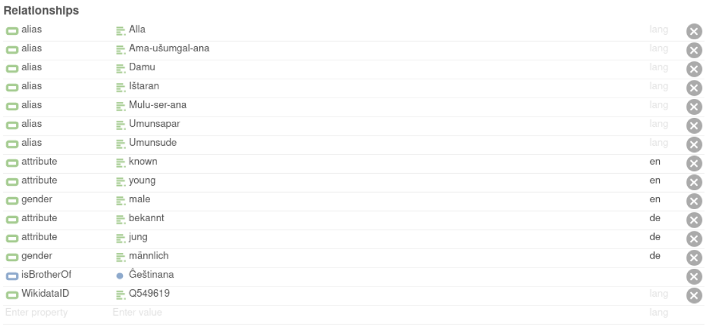

Posters
A selection of posters presented in the DANES conferences!
DANES 2023
- Sara Arroyo Cuadra (UNED), Material Culture from the Middle Babylonain Period (McMiB)
This poster aims to show the main objectives to be developed within the project “Material culture from Middle Babylonian period (McMiB): digitalization and democratization of the access to the cultural heritage of the Ancient Near East”, funded thanks to a “María Zambrano” Postdoctoral Fellowship.
Downloadable link to the abstract and poster.
Beloved, Brother, Friend: Comparing Dumuzi Myths using Shallow Ontologies
Franziska Pannach (GCDH) & Theresa Blaschke, (MCDCI),
Dumuzi is presented in different ways in Near Eastern myths. He is described as wild bull or man, sometimes he is part of a dedicated family structure or a separated entity. This poster presents eigth different views on the Mesopotamian deity, modelled as minimal (or shallow) ontologies, used to compare Dumuzi’s diverse representations.
The project was undertaken as part of the DFG Mythos-Research Group 2064 STRATA at the University of Göttingen. It is a combined effort from graduate students of the field of computater science and Ancient Near Eastern Studies.
Focus of this project is the modelling of domain knowledge – the information that a written source gives us about the world it comes from, the belief systems, the characters of the narrative and their relations. This knowledge helps us to interpret the narratives surrounding Dumuzi.
Large public data repositories and ontologies like Wikidata combine information about entities. They are a valuable resource for re-using knowledge that was gathered from different sources.1 However, for comparing myth-intrinsic information that is often contradictory, such large sources can be impractical.
For instance, “Dumuzi is a shepherd.” is a statement that appears in some narratives, but not in others. If it appears, we can assume the axiom shepherd(Dumuzi) to be true with respect to that specific source. However, if another source does not contain the information, we cannot assume that the axiom is true or false. Especially contradictory information, e.g. whether or not an entity is a deity in one narrative and a mortal human being in another, is important information for comparing myth variants. Therefore, instead of combining information into a single ontology, this project focuses on constructing small ontologies for each myth variant and comparing them in a separate step.
| Text | Reference |
|---|---|
| Death of Dumuzi | Kramer (1980) |
| Song of Innana and Dumuzi (J) | ETCSL Nr. 4.08.10 |
| Innana-Dumuzi Lament (CUNES 53-08-060) | Cohen (2014) |
| Dumuzi and Geštinanna | ETCSL Nr. 1.4.1.1 |
| Dumuzi Lament (ASJ 7, 1‒9) | Alster (1985b) |
| Innana-Dumuzi-Eršema (BM 15821) | Cohen (1981), Ershemma No. 165 |
| Innana-Dumuzi-Balaĝ (BE 30/1, 7) | Fritz (2003), 131-132 |
| Dumuzi-Durtur-Eršema (CT 15, pl. 20-21) | Cohen (1981), Ershemma No. 88 |
To compare different world views on Dumuzi, eight mythical variants in which Dumuzi and his death (listed in Table 1) are the main topic were selected. The domain knowledge we can assert from these myth variants is extracted according to the Hylistic (Zgoll, 2019) theory. Subsequently, it is modelled in shallow domain ontologies.
Important concepts and their shallow hierarchies (e.g. lord isA ruler isA person) are modelled as ontology classes. Characters, like Dumuzi or Innana, are modelled as individuals of the respective ontology. Character attributes and aliases are modelled as data properties, as shown in Figure 1. Relationships between entities of classes, like isBrotherOf() are modelled as object properties. Ontology labels are available in English and German. The individuals are linked to open data sources, Wikidata ID and Pleiades ID (for geolocations). A visualisation of a small example ontology is given in Figure: Dumuzi-Durtur-Eršema in the poster.

The resulting ontologies are freely available as ttl-files and can be used for inter-myth and intra-myth comparison – i.e. comparing variants of the same myth or comparison of different myths. In this project, two measures are applied for overall domain comparison: The class overlap can provide an answer to the question “Which kinds of entities appear in the myth variant?” The individual overlap determines which characters are part of the stories, e.g. “Is this story only about Dumuzi or does Innana appear as well?” Individuals are matched by their labels, aliases or Wikidata ID. We define class overlap as $CO = \frac{\vert C_1 \cap C_2 \vert}{\vert C_1 \cup C_2 \vert}$, where C1 and C2 are classes of ontology O1 and O2 respectively. Individual overlap is measured accordingly.
The results of these two comparisons are presented in distances matrices below. We observe the highest class overlap between the variants in “Innana-Dumuzi-Eršema (BM 15821)” and “Innana-Dumuzi Lament (CUNES 53-08-060)” with a value of 0.55. For individual overlap, i.e. the number of entities appearing in both sequences, the pair “Dumuzi-Durtur-Eršema (CT 15, pl. 20-21)” and “Innana-Dumuzi-Balaĝ (BE 30/1, 7)” have the highest value of 0.5.
This kind of inter-myth comparison gives scholars the oppurtunity to unravel similarities and contradictions between written sources based on a quantitative method, while at the same time it invites for a close reading of already known texts from a new perspective and supports further investigations, e.g. to compare different characters which are present in myths variants based on their ontological classes and relations. Within this project, the method was applied only to a small selection of texts, but it is suitable to analyze a broad range of texts in general. This yet has to be left for further studies.
References
Alster, B. (1985a): Geshtinanna as Singer and the Chorus of Uruk and Zabalam. UET 6/1 22, JCS 37, 219‒228.
Alster, B. (1985b): A Dumuzi Lament in Late Copies, ASJ 7, 1‒9.
Cohen, M. E. (1981): Sumerian Hymnology: The Eršemma. Cincinnati: Hebrew Union College Press.
Cohen, M. E. (2014): A New Piece of an Inanna/Dumuzi Lamentation, in: L. Sassmannshausen (ed.), He Has Opened Nisaba’s House of Learning (= CM 46), 37‒49.
Fritz, Michael M. (2003): „… und weinten um Tammuz“: Die Götter Dumuzi-Ama’ušumgal’anna und Damu (= AOAT 307). Münster: Ugarit-Verlag.
Kramer, S. N. (1980): The Death of Dumuzi: a New Sumerian Version, AnSt. 30, 5‒15.
Metilli, D./Bartalesi, V./Meghini, C. (2019): “A Wikidata-based tool for building and visualising narratives.” International Journal on Digital Libraries 20.4: 417‒432.
Zgoll, C. (2019): Tractatus mythologicus: Theorie und Methodik zur Erforschung von Mythen als Grundlegung einer allgemeinen, transmedialen und komparatistischen Stoffwissenschaft. Berlin, Boston: De Gruyter. https://doi.org/10.1515/9783110541588.
Zgoll, A. and Zgoll, C. (2020): Mythische Sphärenwechsel: Methodisch neue Zugänge zu antiken Mythen in Orient und Okzident. Berlin, Boston: De Gruyter. https://doi.org/10.1515/9783110652543.

Towards Binarization of Iron Age Ostraca from Multispectral Weakly-Annotated Imaging
Ohr Dallal, (TAU),
Image binarization is one of the essential and preliminary steps towards many document processing tasks. We aim to binarize Iron Age Hebrew ostraca, which are of great importance to the historical study of ancient Israel and Judah. To this end, a new and unique dataset is introduced, consisting of multispectral ostraca images taken at different camera wavelengths.
Universal dependencies for Hittite
Maria Molina (TAU
In the recent years universal dependencies (UD) became the standard for digital treebanks, they are an essential part of annotated linguistic corpora, and they are widely used for comparison of language features in linguistic research. This paper describes the UD annotation for Annotated Corpus of Hittite Clauses (ACHC). It is an ongoing project, starting from previously achieved number of UD-annotated clauses.
FactGrid Cuneiform Discovery Project: Building Linked Open Data Repositories
Adam Anderson (UC Berkeley)
This project is inspired by the durability of the data preserved in the oldest writing system known to mankind, called cuneiform. There are approximately a half-million artifacts with cuneiform writing spread all over the planet. Many of these objects are not even photographed, let alone translated. Scholars in this field have made a number of relational text databases, in order to identify these objects housed in museums and private collections, and while these databases have helped create a system of identificaiton and textual analysis, they have yet to be linked together to each other and to the existing scholarship. FactGrid is a Wikibase triplestore designed for historical research, which makes this the ideal hub for linking the existing scholarship, both primary and secondary sources, for every cuneiform artifact in publication.
Wokflow of Cune-iiif-orm
Gustav Ryberg Smidt, Katrien De Graef, Lise Foket (Ghent University) & Hendrik Hameeuw (KU Leuven)
The strategy of the project is to create digital versions of OB tablets within IIIF, publish them in both physical and digital editions and analyse a large corpus of OB cuneiform tablets with computational methods.